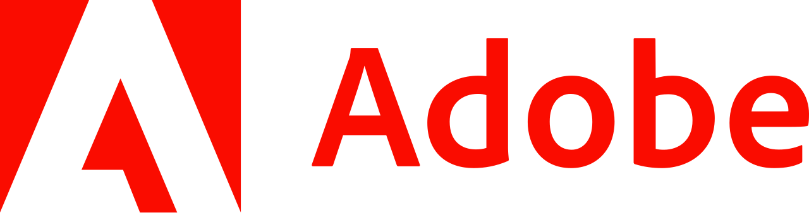

Architecture has been an adventure, taking me to new cities, countries, and experiences. At its heart, I've always seen it as being about people: understanding, learning, and working together to create something better. I've been lucky to work in design-led studios in London and Sweden, on projects across all stages from concept through to construction. Outside of work, I'm active and social. I enjoy most sports, especially football, and like sharing new ideas with friends over a drink.
Background
2011
Kimbolton School
Cambridgeshire, UK
A-Level · Maths, Physics, Art
2015
University of Liverpool
Liverpool, UK
Bachelor of Architecture (Hons) · 2:1
My studies at Liverpool focused on individual design development and hand drafting. Studio projects began at a small scale, such as outdoor public installations around the city and makers' houses, building an early understanding of briefs, design thinking and working with live clients.
Alongside this I developed a broader understanding of architectural history and theory, structures and construction, environmental science, integrated technical design and practice management. Over three years I learned to approach design problems through critical thinking and iterative development, supported by regular weekly critiques where ideas were tested, presented and refined.
This journey culminated in my degree project, the design of a transport hub and underground station in Liverpool's Baltic Triangle.
2019
Trace Architects
London, UK
Part I Architectural Assistant
Working at a small design-led residential studio in London gave me exposure to the full breadth of architectural practice in the UK. I was involved across all stages of the RIBA Plan of Work 1 to 5, from early client meetings to explore ideas and aspirations, through to developing concepts, preparing planning and building control submissions, producing technical packages for construction and tendering, and supporting work on site to ensure the design was delivered accurately.
The experience was not only valuable in terms of process but also in understanding how a practice operates and how projects come together through collaboration. I worked closely with clients, planning consultants, building control officers, structural engineers, contractors and on some projects kitchen and interior designers. It reinforced the importance of clear communication and teamwork. Above all it was rewarding to see ideas come to life and to play a role in helping clients realise their vision.
2019
Lunds Universitet
Lund, Sweden
Master of Architecture
I chose to expand both my architectural and personal education by studying in Scandinavia, to better understand the Swedish design process and way of thinking. Studio work in advanced architectural design included analysing a large area of Malmö as a group and developing our own brief in response to the questions we felt needed to be asked. This shifted my perspective from the scale of the house to that of the city and taught me how to design collaboratively and work with different ideas.
Alongside this I developed my understanding of architectural theory, structure and detailing, and material design, with regular presentations where we were expected to test, defend and refine our ideas.
The programme concluded with my master's thesis, where I explored the relationship between psychology and architecture, focusing on human-centred questions through design. I valued the freedom to explore my own direction as well as the process of sharing, testing and developing ideas within the group.
2021
Krook & Tjäder
Halmstad, Sweden
Arkitekt SAR/MSA
I had the opportunity to work with one of Sweden's largest architectural practices while being based in their Halmstad office, which had a more close-knit feel. It was both a challenge and a privilege to work in a new language and experience architecture in a different cultural and professional context.
My work focused mainly on the concept and planning stages, with projects ranging from large apartment developments to small house extensions and private villas. I was particularly interested in smaller, design-led projects, such as a holiday house in Båstad and an extension in Halmstad, where I could work more closely with clients and develop ideas in more detail.
Day to day the role was highly collaborative, working within a team to develop strong concepts and shared design goals. From preparing bygglov submissions to learning Swedish standards I gained a good understanding of how practice operates in Sweden. While working within these frameworks I was always interested in testing assumptions and pushing ideas to create more considered design.
2026
Freelance Architect
Remote · UK / Sweden
Arkitekt SAR/MSA
I expanded my experience by undertaking two apartment renovations in Malmö, redesigning and refurbishing them to create more functional and enjoyable living spaces. These projects gave me a good understanding of construction in Sweden and strengthened my ability to deliver thoughtful design within practical constraints.
In parallel I've collaborated with several companies and run projects for private clients, supporting work across all stages from early concept and planning through to tender and construction on site. Balancing my own renovations with freelance work has given me a more entrepreneurial perspective and a practical understanding of running projects, from design and technical delivery through to client relationships and coordination.
More recently, I have been working closely with an architect in London, supporting the establishment of a new practice while contributing to the delivery of bespoke residential projects across the city.

